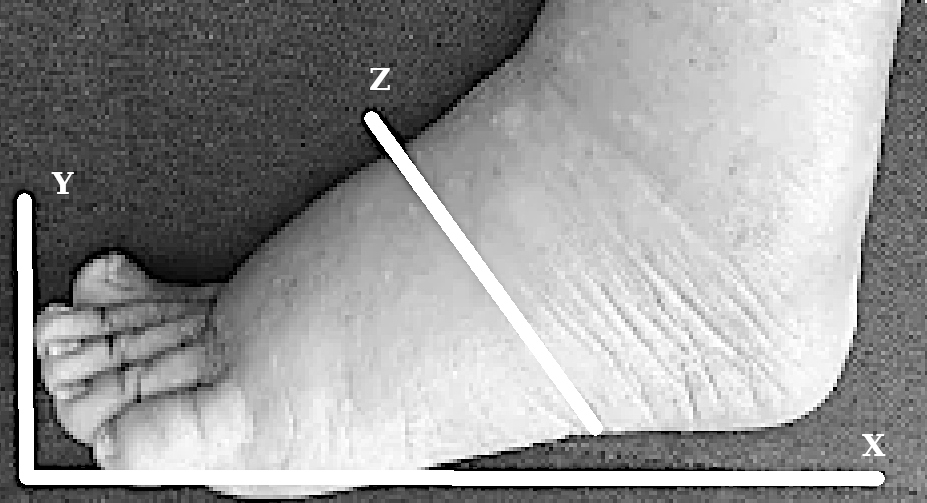
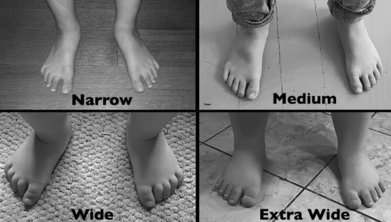
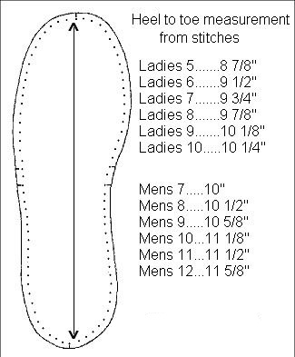
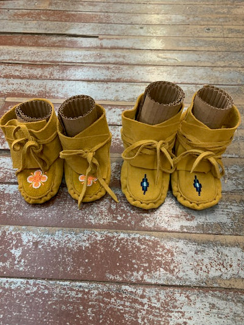

Moc's and Mukluks
Take foot measurements as shown below:
 kidsfoot.png
kidsfoot2.png
Pattern Tutorial playlist
Pattern making Portage College
Lure of the North shoe conversion size
TITLE
Adult Shoe Conversion Sizes:
3
3
Return